تابع، بلاک یا قطعه کدی است که یکبار آن را تعریف کرده و بارها آن را در چندین مکان برنامه میتوان فراخوانی کرد.
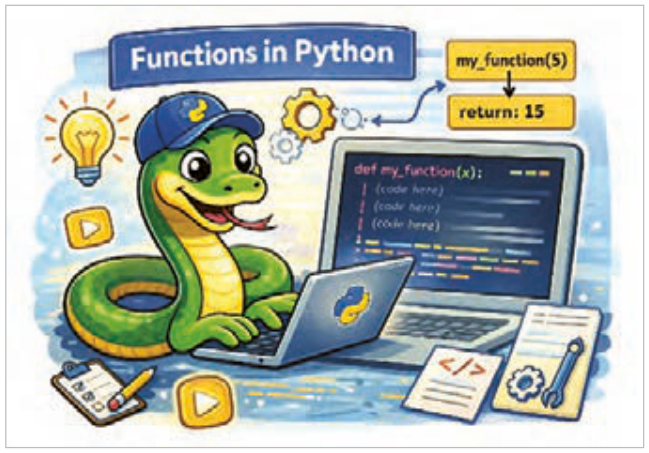
شکل ۱۲۹
مزایای استفاده از تابع
برنامهنویس با تعریف یک تابع، تنها یک بار کد مورد نظر را مینویسد و سپس در هر نقطهای از برنامه یا حتی در پروژههای دیگر که نیاز باشد، آن را فراخوانی و استفاده میکند.
تقسیم کد به توابع کوچک و مشخص، درک و فهم کد را به طور چشمگیری افزایش میدهد.
یافتن و رفع اشکالات و اعمال تغییرات در کد بسیار سادهتر میشود.
سازماندهی کدها بهصورت منطقی و مرتب و ساختار کلی برنامه آسانتر میشود.
تعریف تابع: یک تابع با استفاده از کلمه کلیدی def تعریف میشود و به دنبال آن نام تابع و پرانتز قرار میگیرد.
فرم کلی تعریف تابع با پارامتر ورودی به شکل زیر است:
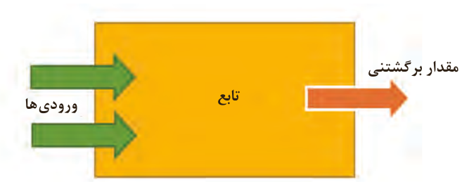
شکل ۱۳۰
def پارامترهای تابع) نام تابع(:
دستور یا دستورات بدنه تابع
مقدار یا مقادیر return
صفحه ۶۳
مثال: در این برنامه تابعی به نام show_store_name تعریف شده و یک دستور print ("Digital Online Store") در آن نوشته شده است (شکل131).
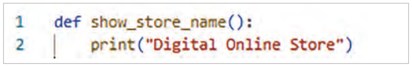
شکل ۱۳۱
مثال: در این برنامه نیز یک تابع به نام greet تعریف شده است و دستور print("Hello! ") در آن نوشته شده است (شکل132).
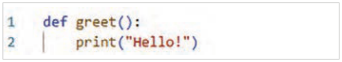
شکل ۱۳۲
مثال: در این برنامه تابع greet() بدون پارامتر تعریف شده است، پس در هنگام فراخوانی نیازی به ارسال آرگومان ندارد (شکل133).
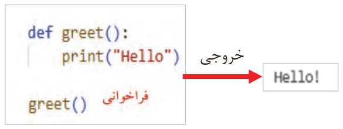
شکل ۱۳۳
خروجی
مثال: در این برنامه نیز تابع بدون پارامتر تعریف شده است. در هنگام فراخوانی نیازی به ارسال آرگومان ندارد (شکل134).
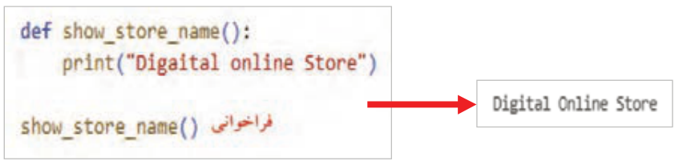
شکل ۱۳۴
صفحه ۶۴
پارامتر و آرگومان (Parameters & Arguments)
پارامتر چیست؟ تابع میتواند ورودیهایی را دریافت کند. به ورودیهای تابع در زمان تعریف تابع، پارامتر (parameter) گفته میشود.
آرگومان چیست؟ ورودیهای تابع که هنگام فراخوانی تابع به آن داده میشود.
پس از تعریف، تابع باید فراخوانی شود تا اجرا شود. اگر تابع را فقط تعریف کنید ولی فراخوانی نشود هیچ اتفاقی نمیافتد. مثل این است که اصلاً تعریف نشده باشد.
برای فراخوانی تابع نام آن را نوشته و به تعداد پارامترها، به آن آرگومان ارسال کنید (در اصطلاح پاسدادن گفته میشود) یک تابع را بارها میتوانید فراخوانی کنید.
نحوه فراخوانی تابع به شکل زیر است:
(آرگومانهای تابع) : نام تابع
مثال: در مثال شکل135 تابع show_product(name, price)
با دو پارامتر name, price تعریف شده است. در زمان فراخوانی هم باید دو مقدار بهعنوان آرگومان ارسال شود.
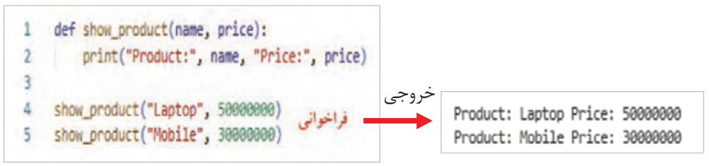
شکل ۱۳۵
خروجی
مثال: در مثال شکل136 تابع print_age(age) دارای یک پارامتر به نام age است. در زمان فراخوانی هم یک آرگومان به آن ارسال شود. همانطور که مشاهده میکنید تابع print_age(age) دو بار و با دو آرگومان متفاوت فراخوانی شده است.
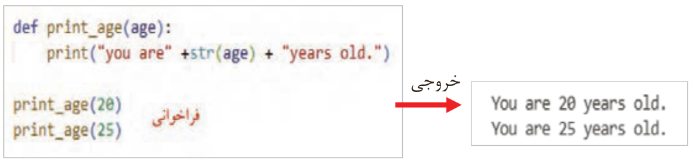
شکل ۱۳۶
خروجی
صفحه ۶۵
اگر ترتیب و نوع ارسال آرگومانها رعایت نشود، خروجی اشتباه تولید میشود. در هنگام اجرا خطا نمیدهد؛ ولی منطق برنامه نادرست است.
راهحل، استفاده از آرگومان کلیدی (keyword arguments) یا همان آرگومانهای با نام است، یعنی میتوان در زمان فراخوانی تابع، نام پارامتر را بههمراه عملگر انتساب نوشت.
مثال: به کدهای شکل 137 دقت کنید. خروجیها را بررسی کنید. فراخوانی بدون رعایت ترتیب آرگومانها، باعث شده اول قیمت و سپس نام کالا چاپ شود و این منطق نادرستی است.
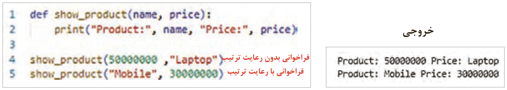
شکل ۱۳۷
مثال: در مثال شکل 138 برای جلوگیری از خروجی اشتباه با ارسال آرگومانها بدون ترتیب، از آرگومانهای کلیدی استفاده شده است. برنامه را نوشته و نتیجه را با مثال قبل مقایسه کنید.
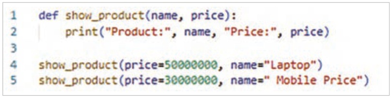
شکل ۱۳۸
صفحه ۶۶
مثال: تعداد آرگومانهای ارسالی به تابع باید با تعداد پارامترهای آن در زمان تعریف تابع برابر باشد. در غیر این صورت در زمان اجرای پیام خطا نمایش داده میشود (شکل139).
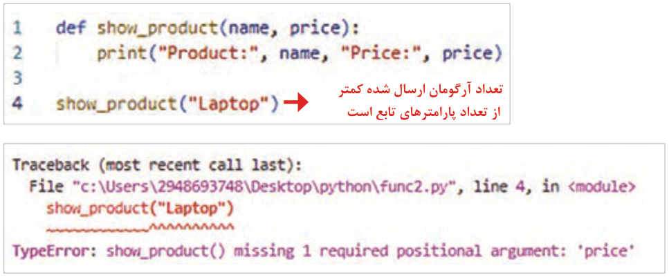
شکل ۱۳۹ — پیام خطای نمایش داده شده پس از اجرای برنامه
مثال: در اولین خط کد شکل 140، تابع با یک پارامتر تعریف شده است. در خط ۴ هنگام فراخوانی، آرگومان آن ارسال نشده است، بنابراین از مقدار پیشفرض آن "Tehran" استفاده میشود. در خط ۵ تابع با آرگومان فراخوانی شده است. برنامه را نوشته و نتیجه را بررسی کنید. مقدار پیشفرض را تغییر دهید و برنامه را اجرا کنید.
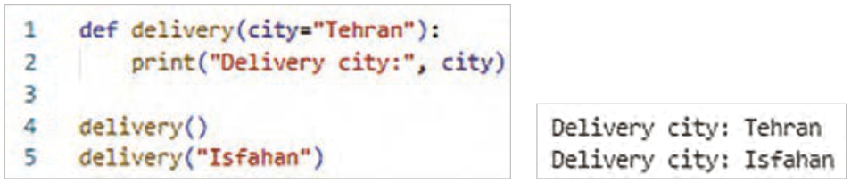
شکل ۱۴۰
صفحه ۶۷
مثال: در این مثال تابع با دو پارامتر تعریف شده که مقدار پیشفرض برای آنها وجود دارد. در هر بار فراخوانی آرگومانها با روشهای مختلف ارسال شدهاند. برنامه را نوشته، نتیجه را بررسی کنید. مقدار پیشفرض را تغییر دهید و دوباره برنامه را اجرا کنید (شکل141).
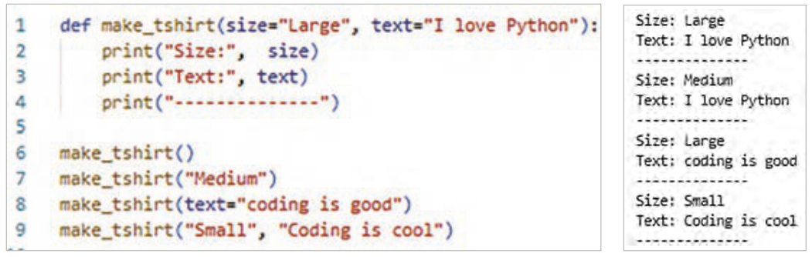
شکل ۱۴۱
مقدار بازگشتی تابع (Return Value)
تابع میتواند مقداری را محاسبه کند و به برنامه برگرداند تا بعداً از آن استفاده شود که به آن مقدار بازگشتی (Return Value) گفته میشود. بدون return تابع کار خودش را انجام میدهد (مثلاً چاپ میکند) ولی هیچ مقداری به بیرون برنمیگرداند و اگر بخواهید نتیجه تابع را در متغیر ذخیره کنید مقدار آن None میشود (شکل142).
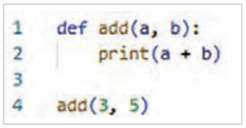
شکل ۱۴۲
مثال: با اجرای برنامه شکل143 مقدار 8 نمایش داده میشود. اما عدد8 ذخیره نشده و همچنین جای دیگری نمیتوان از آن استفاده کرد. حالا برنامه را با استفاده از return تغییر داده و نتیجه را مشاهده کنید.
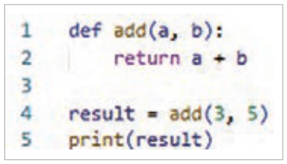
شکل ۱۴۳
این بار: تابع عدد 8 را برگردانده و مقدار بازگشتی در متغیر result ذخیره میشود و میتوان دوباره از آن استفاده کرد.
مثال: بدون استفاده از return فقط (price * count) محاسبه میشود و هیچ مقداری را به برنامه برنمیگرداند، پس با فراخوانی تابع total_ price (2, 200000) در متغیر x مقدار None ذخیره و با اجرای برنامه مقدار None هم چاپ میشود (شکل144).
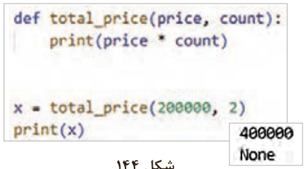
شکل ۱۴۴
صفحه ۶۸
مثال: با استفاده از return مقدار محاسبهشده به برنامه برگردانده میشود و میتوان آن را در متغیر x ذخیره کرد و با چاپ متغیر x مقدار ذخیرهشده، نمایش داده میشود (شکل145).
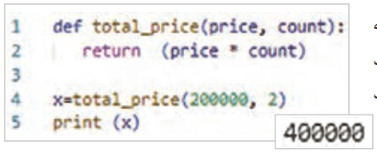
شکل ۱۴۵
مثال: تابعی بنویسید که قیمت کل خرید را حساب کند و اگر تعداد خرید بیشتر از ۵ بود، 10٪ تخفیف بدهد. داخل تابع از if استفاده شده تا شرطی بررسی شود.
اگر شرط (count > 5) برقرار باشد مقدار با تخفیف برگردانده میشود.
اگر شرط برقرار نباشد، مقدار بدون تخفیف برگردانده میشود.
از return استفاده شده است تا نتیجه محاسبه شده به بیرون تابع برگردد و بتوان آن را چاپ یا ذخیره کرد (شکل146).
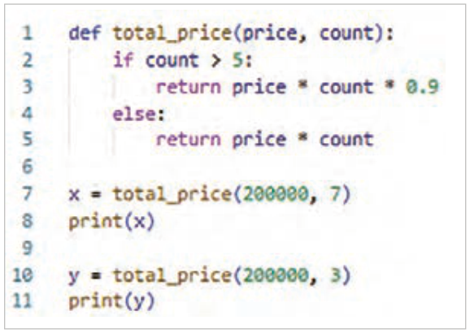
شکل ۱۴۶
استفاده از حلقه در داخل تابع
استفاده از حلقه در داخل تابع به این منظور است که بتوانید دستورات مشخصی را چندین بار و بهصورت خودکار، تا زمانیکه شرط تعیینشده برقرار است یا تعداد دفعات مشخصی تکرار شوند، اجرا کنید. این کار باعث کاهش تکرار کد، افزایش خوانایی و بهینهسازی عملکرد تابع میشود. مثال: در این مثال، تابع تعریف شده اعداد طبیعی کوچکتر از 6 را چاپ میکند. برنامه را اجرا و نتیجه را مشاهده کنید (شکل147).
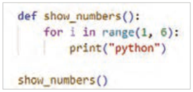
شکل ۱۴۷
صفحه ۶۹
مثال: ابتدا تابع تعریف شده یک پارامتر به نام names دارد که انتظار میرود آرگومانهای دریافتی آن لیستی از اسامی باشند (شکل148).
با حلقه for عناصر لیست را یکییکی دریافت و به متغیر name اختصاص میدهد.
دستور print هم داخل حلقه اجرا شده و اسامی را جداگانه چاپ میکند.
قبل از فراخوانی تابع در اولین خط از برنامه، لیست students که شامل نام دانشآموزان است ایجاد میشود. سپس تابع با آرگومان students فراخوانی میشود. حلقه داخل تابع یکییکی اسامی داخل لیست را چاپ میکند.
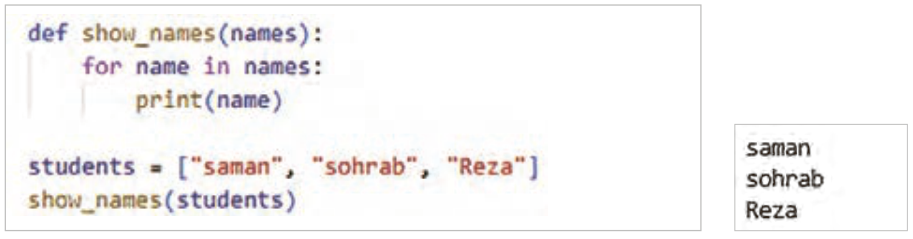
شکل ۱۴۸
Page 62
تابع (Function)
A function is a block or piece of code that is defined once and can be called many times from many places in a program.
Figure 129
Advantages of using functions
By defining a function, the programmer writes the code only once and can then call and use it anywhere in the program, or even in other projects.
Dividing code into small, clear functions makes it much easier to understand.
Finding and fixing bugs and making changes in the code become much simpler.
Organizing the code logically and neatly, and the overall structure of the program, become easier.
Defining a function: a function is defined with the keyword def, followed by the function's name and parentheses.
The general form of defining a function with input parameters is:
Figure 130
def پارامترهای تابع) نام تابع(:
the statement or statements in the body of the function
the value or values returned with return
Page 63
Example: this program defines a function named show_store_name with the statement print ("Digital Online Store") in it (Figure 131).
Figure 131
Example: this program also defines a function named greet with the statement print("Hello! ") in it (Figure 132).
Figure 132
Example: in this program the function greet() is defined with no parameters, so no argument needs to be passed when it is called (Figure 133).
Figure 133
Output
Example: in this program too the function is defined with no parameters. No argument needs to be passed when it is called (Figure 134).
Figure 134
Page 64
پارامتر و آرگومان (Parameters & Arguments)
What is a parameter? A function can receive inputs. The inputs of a function, as named when the function is defined, are called parameters (parameter).
What is an argument? The inputs given to a function when it is called.
After it is defined, a function must be called in order to run. If you only define a function and never call it, nothing happens; it is as if it had never been defined.
To call a function, write its name and send it as many arguments as it has parameters (this is called passing). You can call a function many times.
A function is called like this:
function name : (function arguments)
Example: in the example in Figure 135, the function show_product(name, price)
is defined with the two parameters name and price. When it is called, two values must be passed as arguments.
Figure 135
Output
Example: in the example in Figure 136, the function print_age(age) has one parameter named age. When it is called, one argument is passed to it. As you can see, print_age(age) is called twice, with two different arguments.
Figure 136
Output
Page 65
If the order and type of the arguments passed are not respected, the output is wrong. There is no error when the program runs, but the program's logic is wrong.
The solution is to use keyword arguments (keyword arguments), that is, named arguments: when calling the function you can write the parameter name with the assignment operator.
Example: look at the code in Figure 137 and check the outputs. Calling the function without respecting the order of the arguments makes it print the price first and then the item name, which is wrong logic.
Figure 137
Example: in the example in Figure 138, keyword arguments are used to avoid wrong output when the arguments are passed out of order. Write the program and compare the result with the previous example.
Figure 138
Page 66
Example: the number of arguments passed to a function must equal the number of its parameters when it was defined. Otherwise an error message is shown when the program runs (Figure 139).
Figure 139 — The error message shown after running the program
Example: on the first line of the code in Figure 140, the function is defined with one parameter. On line 4 it is called without an argument, so its default value "Tehran" is used. On line 5 the function is called with an argument. Write the program and check the result. Change the default value and run the program again.
Figure 140
Page 67
Example: in this example the function is defined with two parameters that have default values. On each call the arguments are passed in a different way. Write the program and check the result. Change the default values and run the program again (Figure 141).
Figure 141
مقدار بازگشتی تابع (Return Value)
A function can calculate a value and give it back to the program to be used later; this is called the return value (Return Value). Without return the function does its job (for example, it prints) but gives no value back, and if you store the function's result in a variable, its value is None (Figure 142).
Figure 142
Example: running the program in Figure 143 shows the value 8. But the number 8 is not stored, and it cannot be used anywhere else. Now change the program to use return and see the result.
Figure 143
This time: the function returns 8, the return value is stored in the result variable, and it can be used again.
Example: without return, (price * count) is only calculated and no value is given back to the program; so calling total_ price (2, 200000) stores None in the variable x, and running the program prints None (Figure 144).
Figure 144
Page 68
Example: with return, the calculated value is given back to the program and can be stored in the variable x; printing x shows the stored value (Figure 145).
Figure 145
Example: write a function that calculates the total price of a purchase and gives a 10% discount if more than 5 items are bought. An if is used inside the function to check the condition.
If the condition (count > 5) holds, the discounted value is returned.
If the condition does not hold, the value without discount is returned.
return is used so that the calculated result comes back out of the function and can be printed or stored (Figure 146).
Figure 146
Using a loop inside a function
A loop is used inside a function so that certain statements run several times automatically, as long as a given condition holds or a set number of times. This reduces repeated code, makes the code more readable, and makes the function work better. Example: in this example the function prints the natural numbers less than 6. Run the program and see the result (Figure 147).
Figure 147
Page 69
Example: the function first defined has one parameter named names, whose argument is expected to be a list of names (Figure 148).
The for loop takes the elements of the list one by one and assigns each to the name variable.
The print statement also runs inside the loop and prints the names separately.
Before the function is called, on the first line of the program, the students list holding the students' names is created. Then the function is called with the argument students. The loop inside the function prints the names in the list one by one.